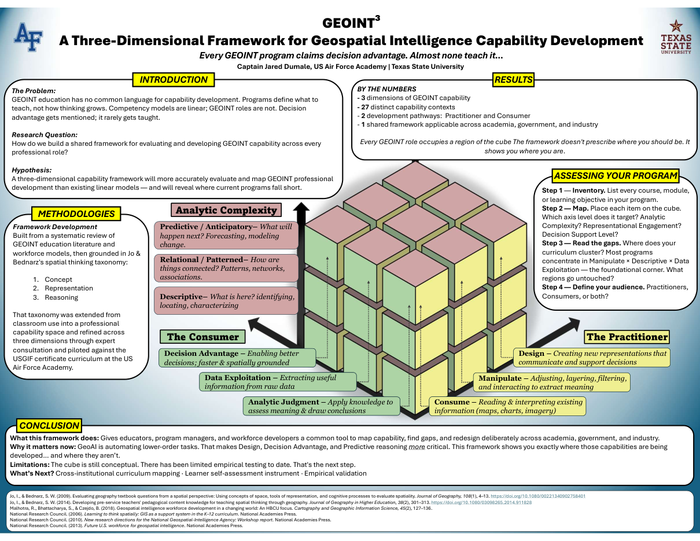
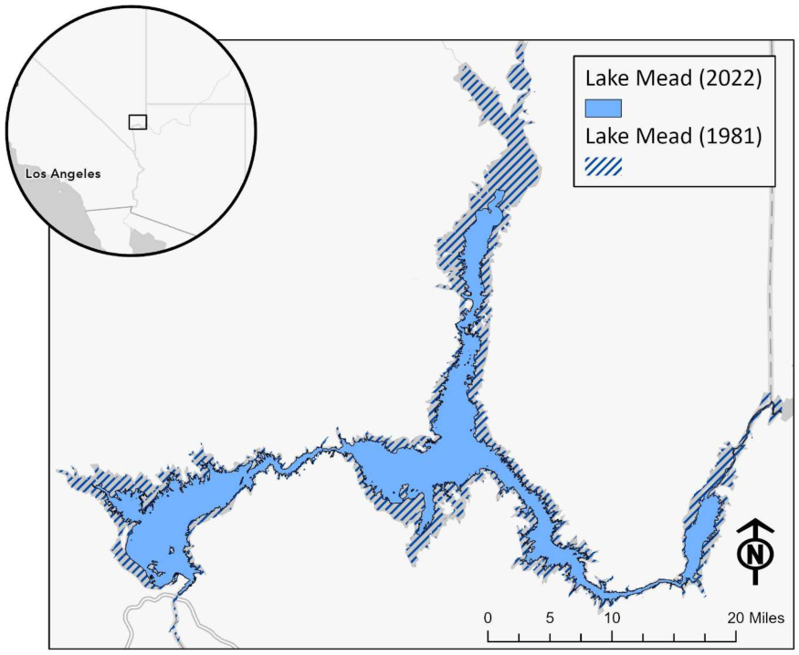
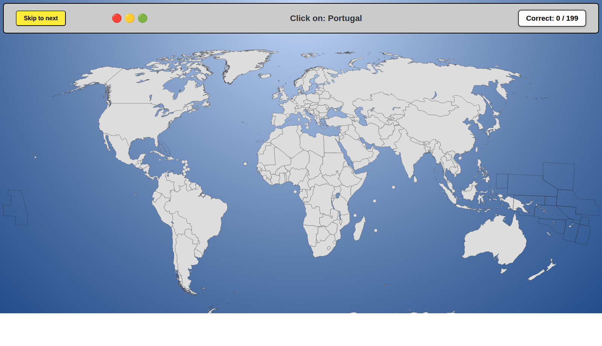

Portfolio
Open a project for the full case study.
-

Opioid mortality and poverty in metro Denver
Spatial analytics study of how overdose deaths and poverty cluster across the Denver metro area.
-

GEOINT³ academic poster
A framework for mapping where GEOINT capability is built, presented at the GEOINT Symposium.
-

Lake Mead surface-water loss
Remote sensing analysis measuring change in Lake Mead's surface area over time.
-

Geo 412: World Geography Trivia
A browser game that teaches countries and their geographic combatant commands.
Other projects
-
BAH Home Comparison Tool (in progress)
Reusable model comparing median home prices by ZIP code to military housing allowance areas.
More
Built to refresh with each monthly data release, so the comparison stays current. Still in progress.
-
Intelligence automation suite
Itinerary generator for high-risk missions, interactive airfield policy map, and live mission dashboard.
More
The suite also includes automated daily distribution of threat products to 3,000+ users. I built it as Senior Intelligence Duty Officer at the 618th Air Operations Center.
-
Spatial-reasoning learning games
Three classroom games that teach map reading and spatial thinking.
More
Part of the World Cultural Geography redesign at the U.S. Air Force Academy. The course results are on the Experience page.
-
GEOINT program visual identity
Recruiting pamphlet, patches, and academic posters for the Academy's GEOINT certificate program.
More
The posters show how the program connects to workforce needs.